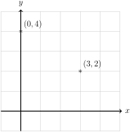
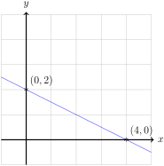

Section 1.2 Standard form and graphs of Linear Functions.
Algebraically, linear functions are expressible as:
Where \(m\) is the slope, the rate of change of our linear function, and \(b\) is the \(\mathbf{y}\)-intercept.
What are these things, why do they have these names, and what do they signify?
Subsection 1.2.1 Slope.
The slope is the constant rate of change of the linear function. It is often expressed:
These algebraic expressions are just a formal way of saying, "However much \(x\) changes, \(y\) or \(f(x)\) always changes by a proportional amount, and this amount is \(m\text{.}\)"
Example 1.2.1.
Let \(y=-x+4\text{.}\) This represents a linear function with \(m=-1\) and \(b=4\text{.}\) To verify, if we compared \(x=4\) and \(x=1\text{,}\) we have a change in \(x\text{,}\) \(\Delta x=4-1=3\text{.}\) To find \(\Delta y\text{,}\) we note that when \(x=1, y=-(1)+4=3\) and when \(x=4, y=-(4)+4=0\text{.}\) Thus \(\Delta y=0-3=-3\text{.}\) So \(m=\frac{\Delta f(x)}{\Delta x}=\frac{-3}{3}=-1\text{.}\)
This shouldn't depend on which choices of \(x\) we made. If we compared \(x=3\) and \(x=2\text{,}\) we have a change in \(x\text{,}\) \(\Delta x=3-2=1\text{.}\) To find \(\Delta y\text{,}\) we note that when \(x=3, y=-(3)+4=1\) and when \(x=2, y=-(2)+4=2\text{.}\) Thus \(\Delta y=1-2=-1\text{.}\) So \(m=\frac{\Delta f(x)}{\Delta x}=\frac{-1}{1}=-1\text{.}\)
This can be represented visually:
An interactive version of this graph can be found here:
Example 1.2.3.
Let \(y=3\text{.}\) We can re-imagine this as \(y=0x+3\text{,}\) so this represents a linear function with \(m=0\) and \(b=3\text{.}\) Note that no matter what the \(x\) values are, \(y=3\text{.}\) So \(\Delta y=0\text{,}\) and \(m=\frac{\Delta y}{\Delta x}=\frac{0}{\Delta x}=0\text{.}\) Intuitively, \(y\) is always 3 and never changes, so the “rate of change” is a constant nothing. This gives us a horizontal line.
This can be represented visually:
An interactive version of this graph can be found here:
Subsection 1.2.2 \(\mathbf{y}\)-intercept.
The \(\mathbf{y}\)-intercept of a linear function \(y=mx+b\) is the value \(b\text{.}\) It is so named because it is the value of the linear function when it intercepts the \(y\)-axis. The reason for this is that the \(y\)-axis is exactly the line \(x=0\text{,}\) and when \(x=0\text{,}\) \(y=m(0)+b=b\text{.}\)
Example 1.2.4.
Let us recall Example 1.2.1 and let \(y=-x+4\text{.}\) Note that when \(x=0, y=-(0)+4=4\text{.}\)
This can be represented visually:

Note that \(4\) is the height of the function when it intercepts the \(y\)-axis.
Example 1.2.5.
Let us recall Example 1.2.3 and let \(y=3=0x+3\text{.}\) Note that when \(x=0, y=3\text{.}\)
This can be represented visually:
Note that \(3\) is the height of the function when it intercepts the \(y\)-axis.
Subsection 1.2.3 Translating from Algebra to Geometry
We can see in our above examples that linear functions have both an algebraic form and a geometric interpretation. Both are useful and in fact necessary to understand what's going on with a linear function. So what we now want to ask ourselves is, given the algebraic expression for a line, how might we find it's geometric representation?
Intuitively, we know that if we had a sheet of paper and a ruler, if we drew 2 points on this paper, we could find the line between them. So to find a geometric representation of a linear function, we should:
Find a point that must be on thee line.
Identify a second point on the line.
Draw the line between them.
Example 1.2.6.
Draw the line \(y=f(x)\) where \(f(x)=-\frac{2}{3}x+4\text{.}\)
We first identify a point on the line, the easiest to find is probably the \(y\)-intercept, note that when \(x=0, f(x)=-\frac{2}{3}(0)+4=4\text{,}\) thus \((0,4)\) is on \(y=f(x)\text{.}\)
We have infinitely many choices for a second point, but to make the arithmetic easy, let's let \(x=3\text{,}\) then \(f(x)=-\frac{2}{3}(3)+4=-2+4=2\text{,}\) so \((3,2)\) is on the line. Note this gives us:
We then literally connect the dots:

Modern technology also let's us readily draw these functions:
Example 1.2.8.
Draw the line \(2x+4y=8\text{.}\)
We first identify a point on the line. To make life easy note that when \(x=0, 2(0)+4y=8\) and \(y=2\text{,}\) thus \((0,2)\) is on \(2x+4y=8\text{.}\)
Similarly when \(y=0, 2x+4(0)=8\) and \(x=4\text{,}\) thus \((4,0)\) is on \(2x+4y=8\text{.}\) Note this gives us:
We then connect the dots:

Again, utilizing technology:
Note that we could have taken \(2x+4y=8\) and rewritten it:
and from here, treated it the same way as in Example 1.2.6.
Checkpoint 1.2.10.
Plot the line \(3x-4y=12\)
We can find two points that lie upon this line. The easiest choices to find are likely the one where \(x=0\) or \(y=0\text{.}\) When \(x=0\) we have \(3(0)-4y=12\) and \(y=-3\text{.}\) Similarly when \(y=0\text{,}\) we have \(3x-4(0)=12\) and \(x=4\text{.}\) So the points \((0,-3)\) and \((4,0)\) lie on this line. So as before we may connect these dots:
Note that as before,we can rewrite \(3x-4y=12\) as:
So our line has \(y-\)intercept \(-3\) and slope \(\frac{3}{4}\text{:}\)